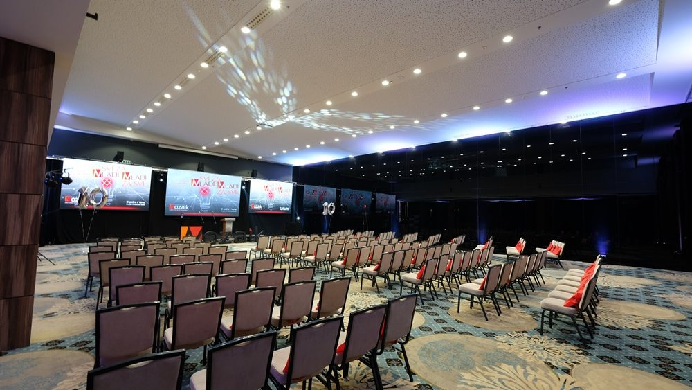

Hotel Hills, Thermal & Spa Resort Sarajevo
Hotel Hills, Thermal & Spa Resort Sarajevo is a new five star Hotel that has attractive location in the center of the green oasis of Sarajevo and within 2 km from the International Airport Sarajevo.
Hotel Hills, Thermal & Spa Resort Sarajevo is a part of a Mrkulic group, the biggest hospitality group in Bosnia and Herzegovina, owner of the Hollywood hotel Sarajevo 4*, Termalna Riviera and Hollywood travel as well. Hotel Hills, Thermal & Spa Resort Sarajevo includes 335 sophisticated comfort and luxurious rooms and suites, all with spacious balconies, chosen details, multi-purpose Congress center with modern conference technology, Thermal spa’s, indoor and outdoor swimming pools, Adrenalin park for children and adults on impressive 2200 square meters, Wedding halls, couple of restaurants with international and national cuisine. The most attractive restaurant and lounge bar is placed at the top of the Hotel with beautiful panoramic view to the green surroundings of the Hotel. Premium accommodation and conference venue, a professional service with a hint of personality and a wide range of facilities are what Hotel Hills, Thermal & Spa Resort Sarajevo is to guarantee.
About us

Congress Centre
Rooms